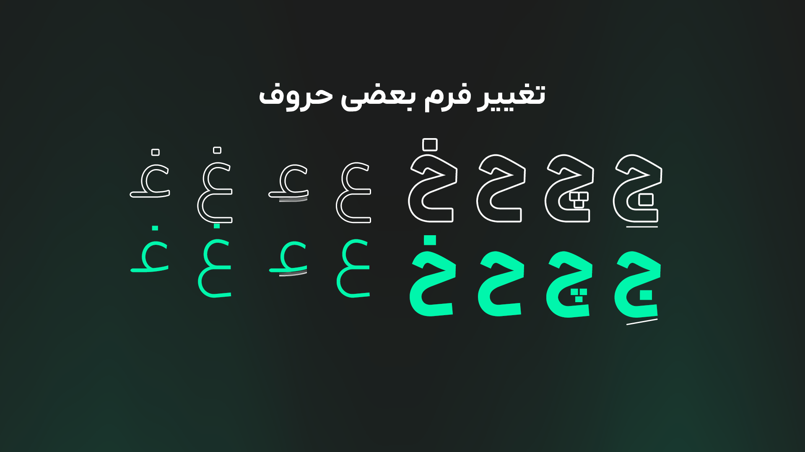

بروزرسانی ۲.۱.۰ آراد منتشر شد!
۷ آذر ۱۴۰۴ • نوشته شده توسط محمد درویشی
تو این نسخه تغییرات فرم بعضی حروف و علائم رو داشتیم که میتونید نمونههاش رو تو تصاویر ببینید. یه سری مشکلات دیگه هم به وجود اومده بود که نتیجۀ سهل انگاری من بود، ولی حالا درست شده و فونت در کل تجربۀ بهتری ایجاد میکنه.

- تغییر جزئی فرم «عـ» و «ع»
- تغییر فرم حلقه حروف «ح،خ،چ،ج،ع» و فرم انتهایی این حروف

- بازبینی فرم نقطه (period)
- طراحی ویرگول فارسی تغییر کرد
- طراحی گیومه فارسی تغییر کرد
- هفتک حروف ێ، برخلاف قبل، حالا تنظیمتر شده
- انواع جایگزین های «ی» و کاف و گاف، در دسترس قرار گرفتند
- طراحی ویرگول فارسی تغییر کرد
- طراحی گیومه فارسی تغییر کرد
- هفتک حروف ێ، برخلاف قبل، حالا تنظیمتر شده
- مشکلات کوچکی در هماهنگی متن فارسی و انگلیسی بود که برطرف شد
- هماهنگی بیشتر اِعراب با همدیگر
- اصلاح اِعرابگذاری چند حرف
- رفع مشکل ویژگی tnum برای اعداد انگلیسی
- باگ های مختلف برطرف شد.
- باگ های مختلف برطرف شد.
و تغییرات دیگری، که در اینجا اشاره نشدند.
برای دانلود این نسخه، به این پیوند مراجعه کنید.